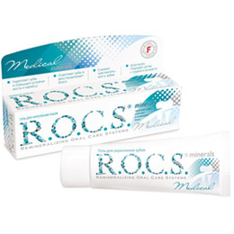

Снижает повышенную чувствительность зубов

Описание
Гель R.O.C.S. Medical Minerals является высоко усвояемым источником кальция, фосфора и магния. Благодаря формированию стабильной пленки при нанесении на поверхность зубов, гель обеспечивает постепенное проникновение активных компонентов в ткани зуба.
Восстанавливает минеральную насыщенность зубов, что повышает устойчивость зубов к кариесу. Улучшает внешний вид зубов (цвет и блеск) без использования отбеливающих методик Снижает повышенную чувствительность зубов. При нанесении геля на зубы на их поверхности образуется прозрачная пленка, которая содержит биодоступные минералы, необходимые для формирования кристаллов гидроксиапатита эмали зубов.
Кроме того, в состав геля включен ксилит, который обладает противокариозным эффектом и способствует нормализации микрофлоры полости рта. Гель не содержит фтора, безопасен при проглатывании. Он подходит детям с грудного возраста. Гель – незаменимый эффективный противокариозный препарат в зонах эндемического флюороза и для тех, кому применение фторсодержащих средств нежелательно.
Рекомендации по применению
Применять гель удобно и просто: после чистки зубов необходимо нанести его на зубы щеткой и воздержаться от еды и питья в течение 30 минут. Возможно применение геля в каппах. Возможно использование геля на постоянной основе, так как он безвреден и не имеет побочных эффектов. Подходит детям с грудного возраста.
С этим продуктом покупают

174 руб.
174 руб.
174 руб.
174 руб.